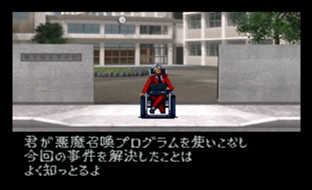

- PS판 난이도 선택
- 파티 속성
- 속성 변화 보상
- 특수 보상
- 월령
- 각종 파라미터 계산식
- 무기 숙련도
- 파트너의 습득 마법 수
- 메모리 체크 보너스
- 2주차 플레이
PS판 난이도 선택
| 항목 |
EASY |
NOMAL |
| 탄수 제한 |
없음(무한) |
있음(공격 회수와 탄 소비량이 동일) |
| 탄의 가격 |
비쌈 |
통상 |
| 도망치기 |
4회째 반드시 성공 |
운에 따름 |
| 도주 실패시 받는 데미지 |
노멀보다 20% 경감 |
통상 |
| 악마 교섭시의 총의 장비 |
실제로는 장비하고 있다 |
장비가 떼어진다 |
게임 내용 변화가 없기 때문에 쉽게 진행하려면 EASY난이도로 시작하면 좋습니다.
파티 속성
스테이터스의 PARTY 항목에는 중마의 평균 속성에 따라 LAW, NEUTRAL, CHAOS로 표시됩니다.
소환한 중마의 속성이 로우가 많다면 로우로 표시, 반대로 카오스가 많다면 카오스로 표시되는 방식으로 파티 편성에 따라 언제든지 변화가 가능하니 특별히 신경 쓸 일은 없습니다.
속성 변화 보상
제4노모스와 하늘의 노모스에 있는 보상 중 파티 속성에 의해 내용물이 변화하는 것이 있다.
보상(보물 상자)을 얻을 때 적절히 파티 구성원을 바꿔서 원하는 아이템으로 획득하면 된다.
NEUTRAL 속성이였을 때는 소마(ソーマ)가 나온다.
| 장소 |
속성이 LAW |
속성이 CHAOS |
| 하늘의 노모스30F |
腐食の弾 |
ドクロの弾丸 |
| 하늘의 노모스32F |
メギドファイア |
ピースメーカー |
| 제4노모스 26F |
ジーザスグラブ |
天魔の篭手 |
| 제4노모스 27F |
ジーザスレッグ |
天魔の具足 |
| 제4노모스 28F |
ジーザスヘルム |
天魔の兜 |
| 제4노모스 29F |
ジーザスアーマー |
天魔の鎧 |
특수 보상
질투계와 탐욕계에 있는 특수 보상(흰색 보물상자로 통상으로는 소마가 들어있음)에 대해서 입니다.
레어 가디언 '로우 히어로' 또는 '카오스 히어로'를 빙의한 상태에서 보상을 열면 해당 가디언에 따라 내용물이 바뀝니다.
PS판에서는 주인공에게만 빙의해야 보상 내용이 변화합니다.
| 장소 |
로우 히어로 |
카오스 히어로 |
| 질투계1F |
ジーザスアーマー |
天魔の鎧 |
| 질투계1F |
ジーザスヘルム |
天魔の鎧 |
| 질투계3F |
ジーザスグラブ |
天魔の篭手 |
| 질투계5F |
ジーザスレッグ |
天魔の具足 |
| 탐욕계1F |
天御剣 |
倶利伽羅の剣 |
월령
월령은 <만월→신월→만월>순으로 주기가 16 단계로 나누어져 있으며 16보마다 월령이 1단계 진행된다.
월령이 미치는 영향은 이하와 같다.
- 악마 회화
- 만월시 악마와의 회화는 기본적으로 불가.
- 일부 예외가 있어 회화가 가능하기도 한다.
- 마법의 상자
- 만월시에 마법의 상자를 열면 상자에 들어있는 보석과 같은 종류의 보석을 소지하고 있지 않는 한 보석 입수할 수 있다.
- 이 때 극히 보기 드물게 레어 악마 : '마인 앨리스'가 등장한다. (선택지가 나오는데 보석을 건네주면 앨리스가 가버리고, 주지 않으면 전투가 된다.)
- 레어 가디언
- 만월시에 사망하면 1/256 확률로 레어 가디언이 빙의된다.
각종 파라미터 계산식
| 파라미터 |
계산식 (소수점은 버림) |
| 검 공격 |
레벨 ÷ 4 + 힘 + 검 공격력(장비) |
| 검 명중 |
레벨 + 운 ÷ 2 + 속도 + 검 명중(장비) |
| 총 공격 |
레벨 ÷ 4 + (총 공격 + 탄 공격) |
| 총 명중 |
레벨 + 운 ÷ 2 + 속도 + 총 명중(장비) |
| 방어 (인간) |
속도 + 체력 + 방어(장비) |
| 회피 (인간) |
레벨 + (지혜 + 운) ÷ 4 + 속도 + 회피(장비) |
| 공격 (악마) |
(레벨 + 힘) × 2 |
| 명중 (악마) |
레벨 × 1.5 + 속도 + (힘 + 운) ÷ 4 |
| 방어 (악마) |
(레벨 + 체력) × 2 |
| 회피 (악마) |
레벨 × 1.5 + 속도 + (지혜 + 운) ÷ 4 |
| 마법 위력 |
지혜 ÷ 4 + 마력 |
| 마법 효과 |
마력 ÷ 4 + 지혜 |
무기 숙련도
무기의 옆에 숫자가 있는데 이것이 무기 숙련도입니다. 사용하면 사용할수록 무기의 공격력이 오릅니다. 반대로 내려가지는 않습니다.
검은 사용한 회수에 따라 공격력에 보정치가 가산됩니다. '보정 랭크'라는 것이 존재하며 '보정 랭크'는 없음을 포함해서 16단계(0~15), 16회 공격할 떄 마다 1랭크씩 상승합니다. (다단 공격이나 전체 공격도 1회로 카운트됩니다. 또한 반사나 흡수 되어도 1회로 카운트) 기록되는 사용회수는 무기마다 최대 255회까지 기록됩니다. 추가로 PS판에서는 랭크1부터 시작하기 때문에 랭크의 없음 단계는 1로 대체하는 듯합니다.
- 무기의 보정 공격력 계산식 (소수점은 버림)
- ((사용 회수 / 16) * 무기 공격력 / 65 ) + 무기 공격력
- 공격력 10의 금속 배트(金属バット)를 255회 사용하여 나온 결과
- ((255 / 16) * 10 / 65 ) + 10 = 12
- 이렇듯 기본 공격력이 낮은 무기를 아무리 높은 랭크로 올려놔도 상승치는 +2 밖에 없습니다. 어차피 고급 무기는 합체 검이나 이벤트 무기로 습득하니 무기 숙련도는 신경 안써도 괜찮습니다.
파트너의 습득 마법 수
파트너가 습득할 수 있는 마법의 수는 다음과 같이 계산한다.
마법 최대 습득 수 계산식 (소수점 이하 버림)
= (레벨 × 2 + 지혜 + 마력) ÷ 8 + 4
최대 32개까지 습득할 수 있다. 그 이전까지 계산식에 의해 마법 습득 수가 결정 된다.
최대 마법 습득 수를 넘어버리고 새로운 가디언을 빙의해서 마법이 넘쳐버리면 이전에 배운 마법은 밀려나면서 지워진다.
따라서 중요한 마법은 최대 소지수를 잘 따져서 새로운 가디언을 빙의하자. 생각 없이 죽어나가면 파트너의 마법이 엉망이 된다.
메모리 체크 보너스
PS판 if...는 아틀라스社 게임 소프트(PS)의 데이터를 체크해서 보너스를 얻을 수 있습니다.
조건은 메모리 카드에 해당 게임의 데이터가 들어있으면 됩니다. 이 보너스는 감정가게(鑑定屋)에서 받을 수 있습니다.
- 감정가게의 위치
- '유미, 레이코, 찰리'루트는 나태계 B3F
- 아키라 루트는 제1노모스(월령이 신월시 영업), 제3노모스
| 소프트 명칭 |
효과 |
| 진여신전생 |
주인공과 파트너의 전 능력치 +2 |
| 진여신전생2 |
전 중마의 어빌리티 +1 |
| 데빌서머너 소울 해커즈 |
주인공과 파트너의 체력 +3
전 중마의 HP +25% |
| 페르소나 |
파트너가 마법 <サバトマ>를 배운다 |
| 페르소나2 죄 |
파트너가 마법 <ネクロマ>를 배운다 |
| 페르소나2 벌 |
파트너가 마법 <リカームドラ>를 배운다 |
| 데빌칠드런 흑의 서, 적의 서 |
<ドクロの弾丸> 10개 |
스노포케라
(スノポケラー) |
소마 10개 |
레브스
(レブス) |
주인공과 파트너의 지력 +5 |
| 峠MAX 最速ドリフトマスター |
주인공의 속도 +5 |
| 峠MAX 2 |
파트너의 속도 +5 |
사우전트암즈
(サウザントアームズ) |
파트너가 마법 <タルカジャ>를 배운다 |
아이시아
(アイシア) |
파트너가 마법 <スクカジャ>를 배운다 |
| 그로우랜서 |
파트너가 마법 <マカカジャ>를 배운다 |
2주차 플레이
게임을 클리어하면 스탭롤이 끝나고 클리어 데이터를 세이브합니다.
세이브한 데이터에 엔딩을 본 루트의 파트너 이름이 표시됩니다.
타이틀로 나오고 NEW GAME을 선택하고 난이도를 선택하면 클리어 데이터를 로드하여 새 게임을 시작할 수 있습니다.

모든 루트를 플레이해서 엔딩을 보면 모든 루트(마계편, 유폐의 탑)의 주요 장면을 처음부터 끝까지 볼 수 있습니다.